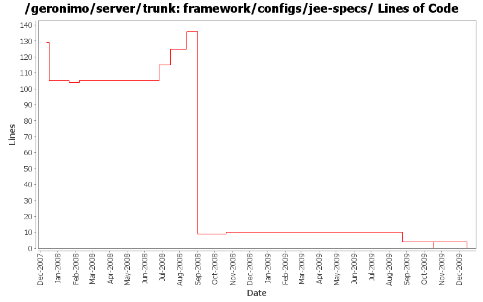

[root]/framework/configs/jee-specs
 src
(0 files, 0 lines)
src
(0 files, 0 lines)
 main
(0 files, 0 lines)
main
(0 files, 0 lines)
 history
(0 files, 0 lines)
history
(0 files, 0 lines)

| Author | Changes | Lines of Code | Lines per Change |
|---|---|---|---|
| Totals | 35 (100.0%) | 88 (100.0%) | 2.5 |
| djencks | 16 (45.7%) | 32 (36.4%) | 2.0 |
| jdillon | 3 (8.6%) | 22 (25.0%) | 7.3 |
| gawor | 5 (14.3%) | 15 (17.0%) | 3.0 |
| rickmcguire | 4 (11.4%) | 10 (11.4%) | 2.5 |
| jbohn | 2 (5.7%) | 6 (6.8%) | 3.0 |
| xuhaihong | 1 (2.9%) | 1 (1.1%) | 1.0 |
| kevan | 3 (8.6%) | 1 (1.1%) | 0.3 |
| dwoods | 1 (2.9%) | 1 (1.1%) | 1.0 |
remove jee-specs config. not needed anymore
0 lines of code changed in 3 files:
GERONIMO-4970 Remove those specs and impl which are shipped by JRE 1.6
Patch for removing geronimo-ws-metadata_2.0_spec provided by Shiny Cheng.
0 lines of code changed in 1 file:
Use JSP spec version
1 lines of code changed in 1 file:
fix problem in EarConfigBuilder when constructing sub-configurations for wars. Rename DeploymentContext.getBundle to getDependencyBundle to try to make it clearer that it is temporary and not always available. Start updating pluto/console stuff for pluto 2.
1 lines of code changed in 1 file:
GERONIMO-4916 step 2 move sandbox osgi framework into trunk
4 lines of code changed in 3 files:
GERONIMO-4916 step 1 remove old framwork
0 lines of code changed in 3 files:
first pass at updating build to JPA2
1 lines of code changed in 1 file:
Upgrade to ee6 specs for servlet, ejb. Upgrade to jetty 8. Use jpa 1.0 spec labelled 1.0. Don't try to include openwebbeans until it has available snapshots
2 lines of code changed in 1 file:
GERONIMO-4655 upgrade version to 3.0-SNAPSHOT, make a few things more consistent
1 lines of code changed in 1 file:
GERONIMO-4705 use sun jstl from maven central
1 lines of code changed in 1 file:
GERONIMO-4684, GERONIMO-4685 Use our tomcat build, configure tomcat using server.xml. Also includes some spec jar updates including using our jaxb spec jar
3 lines of code changed in 1 file:
GERONIMO-4522 filter dependency history using maven, also switch to maven filtering from velocity for plan filtering
1 lines of code changed in 1 file:
use the servlet_2.5 spec for now
1 lines of code changed in 1 file:
GERONIMO-4360 set up some flags for easy switching between connector versions
2 lines of code changed in 1 file:
GERONIMO-4239, sort of. Use transitive depenedencies in c-m-p everywhere. This may break stuff.... let me know
5 lines of code changed in 1 file:
upgrade to jax-ws api 2.1 (GERONIMO-4242)
5 lines of code changed in 1 file:
GERONIMO-3149 Some gbeans to support jaspi components and a little bit of reorganization
12 lines of code changed in 1 file:
Fix build break cause by openejb updates
10 lines of code changed in 1 file:
make concurrent-deployer work in offline mode
10 lines of code changed in 1 file:
GERONIMO-3825 Update specs to latest published versions, switch from axis2-saaj-spec to geronimo-saaj_1.3_spec
5 lines of code changed in 1 file:
Update LICENSE and NOTICE files. Merge from 2.1 branch
0 lines of code changed in 2 files:
upgrade trunk to 2.2-SNAPSHOT
1 lines of code changed in 1 file:
(GERONIMO-3747) Fixed parentage of module groups, though most still need to have their modules put into the proper groupId
Updated groupId of *everything* under framework/** to org.apache.geronimo.framework, and did my best to update all references
20 lines of code changed in 1 file:
(GERONIMO-3771) Moved maven-plugins/* to buildsupport/*, updated groupId to org.apache.geronimo.buildsupport
2 lines of code changed in 1 file:
Drop relativePath
0 lines of code changed in 1 file:
GERONIMO-3607 Remove a lot of versions, resolve versions appropriately during export
0 lines of code changed in 1 file:
GERONIMO-3704 Convert the activation and javamail dependencies to non-snapshot versions.
0 lines of code changed in 2 files: